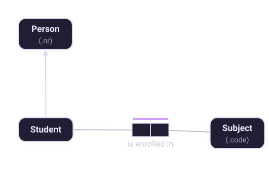
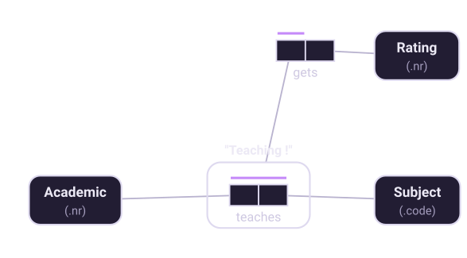

Chapter 8 of 10
Subtypes and objectification
Two ways of adding structure: when a kind of thing needs its own facts, and when a fact becomes a thing.
Where subtypes come from
Chapter 6 ended with the question that produces subtypes. Halpin makes it a procedure:
Read that carefully, because it rules out the way most people arrive at subtypes. You do not start from a taxonomy — "we have people, and some are students and some are staff" — and then look for facts. You start from an optional role and ask who actually plays it. If the answer is a well-defined group, that group becomes a subtype and the role becomes mandatory for it.

"Well-defined" is the operative word. A subtype must have a subtype definition — a rule saying who belongs to it, in terms of facts already in the model:
Each Student is a Person who is enrolled in some Subject.
Each Teacher is an Academic who teaches some Subject.
Each Professor is an Academic who has Rank 'P'.If you cannot write that sentence, you do not yet have a subtype — you have a category someone mentioned. Either find the fact that defines it, or record it as a fact instead: an optional Person has PersonKind fact type is often the honest model.
What subtypes inherit
A subtype inherits its supertype's reference scheme: a Student is identified by the same person number that identifies the Person. It also inherits every role the supertype plays. What it adds is roles of its own, which are mandatory for the subtype and simply do not exist for its siblings.
When a subtype has more than one supertype, one path must be marked as the identification path, so the model says which identifier it inherits. Factum warns when this is ambiguous.
Constraints between subtypes
Two independent properties are worth stating explicitly, and they are independent:
- Exclusive — no object belongs to two of the subtypes. A Person is not both a Man and a Woman.
- Exhaustive — every object of the supertype belongs to at least one. Every Person is a Man or a Woman.
Both together is a partition. Neither is implied by the presence of subtypes: an Academic may well be both a Teacher and a Professor, and plenty of people are neither.
Objectification
The second construct answers a different question: what if a fact needs facts of its own?
Consider "Academic teaches Subject". Now you need to record a rating for that teaching. The rating is not a property of the academic, nor of the subject — it belongs to the pairing. So the fact type is objectified: wrapped in a soft rectangle, named, and treated as an object type that can play roles like any other.

Two rules govern this:
- By default an objectified fact type is fully spanned by a uniqueness constraint, which keeps it elementary — each Academic-Subject pair occurs once, so there is exactly one thing for the rating to attach to.
- The objectified type is often independent. In the figure, not every teaching has been rated, so a Teaching must be able to exist while playing no role.
When not to objectify
Halpin gives a precise piece of advice that is easy to miss, and it prevents a lot of unnecessary nesting:
In other words: if every Academic-Subject pair had a rating, and the rating were the only thing you recorded about it, you would not objectify at all — you would use a ternary fact type Academic teaches Subject with Rating. It is the optionality of the rating that makes the nested form better, because a ternary would force rating and teaching to be recorded together.
This is the same trade-off as chapter 2's, seen from the other side. Objectification lets you attach facts to a fact without forcing them to arrive at the same time.
How both land in a database
The two constructs map very differently, which is worth knowing while you model. Subtypes are
usually absorbed into their supertype's table, or become a node with an IS_A link in
a graph. An objectified fact type almost always becomes a table — or, in a property graph, a node
with one relationship per role. Mapping rules has the details.